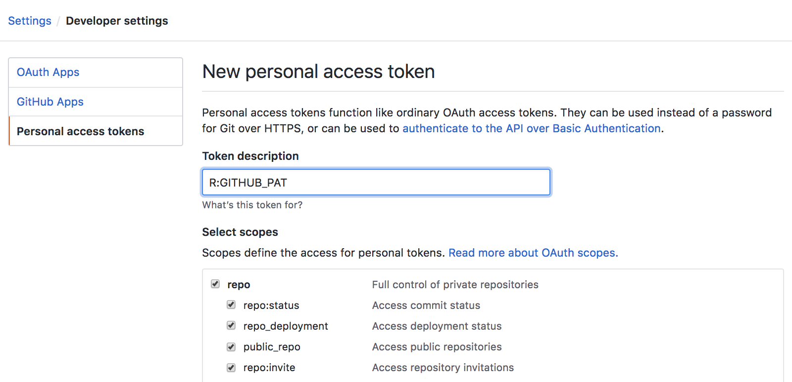
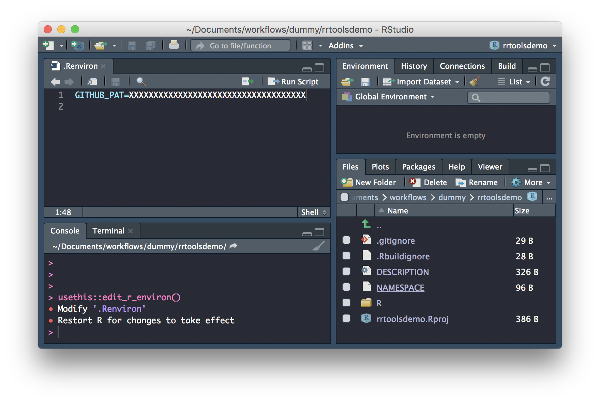
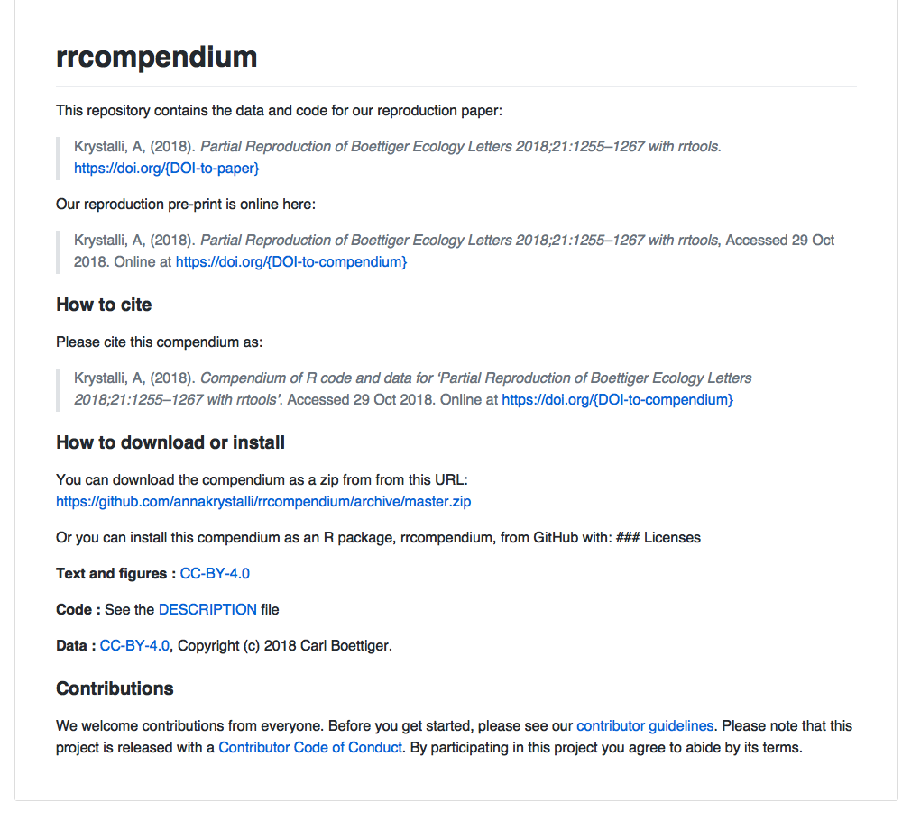

You’ll need a Personal Authorisation Token (PAT) from GitHub to be able to interact with GitHub through R.
Use:
usethis::browse_github_pat()to open up the GitHub panel to generate your PAT.

Copy the generated PAT to paste into your .Renviron file as system variable GITHUB_PAT.
You open and edit your .Renviron file with:
usethis::edit_r_environ()Paste it into your .Renviron file as system variable GITHUB_PAT, save and close.

usethis::use_github()✔ Setting active project to '/Users/Anna/Documents/workflows/rrcompendium'
● Check title and description
Name: rrcompendium
Description: Partial Reproduction of Boettiger Ecology Letters 2018;21:1255–1267 with rrtools
Are title and description ok?
1: Not now
2: Definitely
3: Nope
✔ Creating GitHub repository
✔ Adding GitHub remote
✔ Adding GitHub links to DESCRIPTION
✔ Setting URL field in DESCRIPTION to 'https://github.com/annakrystalli/rrcompendium'
✔ Setting BugReports field in DESCRIPTION to 'https://github.com/annakrystalli/rrcompendium/issues'
✔ Pushing to GitHub and setting remote tracking branch
✔ Opening URL https://github.com/annakrystalli/rrcompendiumrrtools::use_readme_rmd()
✔ Creating 'README.Rmd' from template.
✔ Adding 'README.Rmd' to `.Rbuildignore`.
● Modify 'README.Rmd'
✔ Rendering README.Rmd to README.md for GitHub.
✔ Adding code of conduct.
✔ Creating 'CONDUCT.md' from template.
✔ Adding 'CONDUCT.md' to `.Rbuildignore`.
✔ Adding instructions to contributors.
✔ Creating 'CONTRIBUTING.md' from template.
✔ Adding 'CONTRIBUTING.md' to `.Rbuildignore`.
This generates README.Rmd and renders it to README.md, ready to display on GitHub. It contains:
The call also adds two other markdown files:
---
output: github_document
---
<!-- README.md is generated from README.Rmd. Please edit that file -->
``{r, echo = FALSE}
knitr::opts_chunk$set(
collapse = TRUE,
comment = "#>",
fig.path = "README-"
)
``
# rrcompendium
This repository contains the data and code for our paper:
> Authors, (YYYY). _Title of paper_. Name of journal/book <https://doi.org/xxx/xxx>
Our pre-print is online here:
> Authors, (YYYY). _Title of paper_. Name of journal/book, Accessed 30 Oct 2018. Online at <https://doi.org/xxx/xxx>
### How to cite
Please cite this compendium as:
> Authors, (2018). _Compendium of R code and data for 'Title of paper'_. Accessed 30 Oct 2018. Online at <https://doi.org/xxx/xxx>
### How to download or install
You can download the compendium as a zip from from this URL: </archive/master.zip>
Or you can install this compendium as an R package, rrcompendium, from GitHub with:
### Licenses
**Text and figures :** [CC-BY-4.0](http://creativecommons.org/licenses/by/4.0/)
**Code :** See the [DESCRIPTION](DESCRIPTION) file
**Data :** [CC-0](http://creativecommons.org/publicdomain/zero/1.0/) attribution requested in reuse
### Contributions
We welcome contributions from everyone. Before you get started, please see our [contributor guidelines](CONTRIBUTING.md). Please note that this project is released with a [Contributor Code of Conduct](CONDUCT.md). By participating in this project you agree to abide by its terms.
READMEThis repository contains the data and code for our reproduction paper:
> Krystalli, A, (2018). _Partial Reproduction of Boettiger Ecology Letters 2018;21:1255–1267 with rrtools_. <https://doi.org/{DOI-to-paper}>Our reproduction pre-print is online here:
> Krystalli, A, (2018). _Partial Reproduction of Boettiger Ecology Letters 2018;21:1255–1267 with rrtools_, Accessed 30 Oct 2018. Online at <https://doi.org/{DOI-to-compendium}>
Please cite this compendium as:
> Krystalli, A, (2018). _Compendium of R code and data for 'Partial Reproduction of Boettiger Ecology Letters 2018;21:1255–1267 with rrtools'_. Accessed 30 Oct 2018. Online at <https://doi.org/{DOI-to-compendium}>This is a link to download a zipped file of the repository. To update the template, just paste the url of your compendium repository like so:
### How to download or install
You can download the compendium as a zip from from this URL: <https://github.com/annakrystalli/rrcompendium/archive/master.zip>**Text and figures :** [CC-BY-4.0](http://creativecommons.org/licenses/by/4.0/)
**Code :** See the [DESCRIPTION](DESCRIPTION) file
**Data :** [CC-BY-4.0](http://creativecommons.org/licenses/by/4.0/), Copyright (c) 2018 Carl Boettiger.We’ve now completed our rrtools README.Rmd! 🎉
Render it to update the README.md file which github displays
Commit and push to GitHub

and your project folder should contain:
.
├── CONDUCT.md
├── CONTRIBUTING.md
├── DESCRIPTION
├── LICENSE
├── LICENSE.md
├── NAMESPACE
├── R
├── README.Rmd
├── README.md
├── man
└── rrcompendium.Rproj